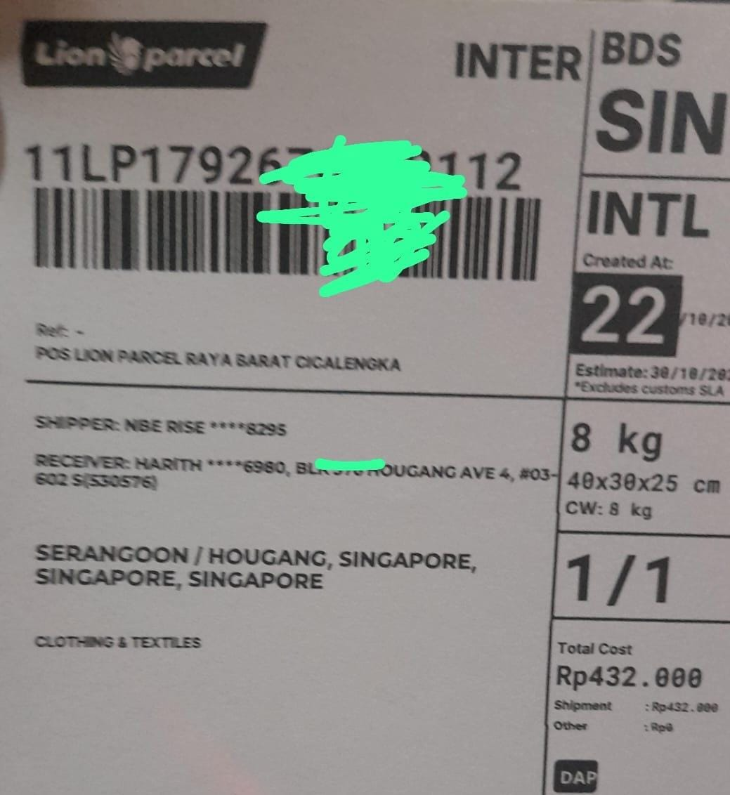

Shipping from Indonesia to Singapore: A Practical Guide to International Parcel Delivery

Need to send a package from Indonesia to Singapore? Whether you are shipping personal belongings, business samples, documents, or other permitted goods, choosing an appropriate international shipping service is an important part of the process.
Singapore is an important destination for business, trade, and personal connections with Indonesia. Before sending a parcel overseas, it is helpful to understand the shipping requirements, prepare the package properly, and confirm the available service options with your courier.
If you are located in Bandung, Rancaekek, or the surrounding areas of West Java, you can contact Lion Parcel Bandung POS101 Nanjungmekar Rancaekek to ask about international shipping options and the requirements for sending your particular shipment to Singapore.
Need Information About Shipping to Singapore?
Contact our team to ask about destination availability, estimated shipping costs, package requirements, and other details before sending your parcel.
💬 Contact Us on WhatsApp1. What Can You Send from Indonesia to Singapore?
The types of goods accepted for international shipping depend on the courier's service conditions, destination regulations, and applicable customs requirements. Before preparing your shipment, confirm whether your item can be transported internationally.
Depending on the service and applicable regulations, common shipment inquiries may involve:
- Business documents: Certain permitted documents and business paperwork, subject to the selected service.
- Product samples: Samples for business purposes, provided they meet shipping and import requirements.
- Clothing and personal items: Eligible non-restricted items that comply with the courier's packaging and shipping rules.
- Commercial goods: Eligible products that meet customs declaration, documentation, and destination requirements.
Some items may be prohibited, restricted, or subject to special documentation. Food, cosmetics, batteries, liquids, medicines, valuable goods, and other regulated products may have additional conditions. Always confirm acceptance with the courier before handing over your package.
📍 Lion Parcel POS101 Nanjungmekar Rancaekek
Find our agent location in Rancaekek, West Java, and check the directions on Google Maps before visiting.
2. How to Prepare a Package for Singapore
Proper preparation can help reduce shipping problems and make the international delivery process easier. Follow these steps before sending your parcel.
- Check the destination service: Confirm that the courier accepts shipments to Singapore for your item category.
- Prepare the recipient's details: Provide the recipient's full name, complete Singapore address, postal code, and a reachable contact number.
- Pack the items securely: Use suitable packaging to protect the contents during handling and transportation.
- Declare the contents accurately: Describe the goods truthfully and provide the required shipment value and supporting documents.
- Confirm the shipping cost and delivery estimate: Ask the courier for a quotation based on the parcel's actual weight, dimensions, contents, destination, and available service.
International shipments may require customs declarations and other documentation. Import duties, taxes, or clearance requirements may also apply depending on the goods and current regulations. Confirm these details before shipping.
3. How Much Does It Cost to Ship a Package to Singapore?
The cost of sending a package from Indonesia to Singapore depends on several factors. There is no single rate that applies to every shipment.
- Package weight: The shipment's chargeable weight affects the final price.
- Package dimensions: Large parcels may be charged according to volumetric weight, depending on the service rules.
- Type of goods: Certain items may require special handling or additional documentation.
- Service availability: Rates and delivery options depend on the destination and the service offered.
- Additional charges: Customs duties, taxes, or other applicable fees may be separate from the shipping fee.
For an accurate quotation, prepare the parcel's weight, dimensions, a description of its contents, the destination postal code, and the recipient's details. Contact Lion Parcel Bandung POS101 to ask which international shipping options are currently available for your shipment.
4. How Long Does Shipping from Indonesia to Singapore Take?
Delivery time depends on the selected shipping service, the origin and destination, transportation schedules, customs clearance, and other operational factors.
Before shipping, ask for the current estimated transit time and whether the estimate includes customs processing. Delivery estimates are not guarantees, and unexpected delays may occur during international transportation.
If you are sending urgent business documents or product samples, explain your deadline when requesting a quotation so the courier can advise whether a suitable service is available.
5. Why Contact Lion Parcel Bandung POS101 Rancaekek?
Preparing an international shipment can raise questions about pricing, permitted items, packaging, and documentation. Contacting an agent before sending your package can help you understand the next steps.
Lion Parcel Bandung POS101 Nanjungmekar Rancaekek serves customers in the Rancaekek area and surrounding parts of Bandung. You can contact the agent to ask about international shipping services, destination coverage, and the requirements applicable to your particular parcel.
Please note that international destination availability, accepted items, rates, and delivery estimates must be confirmed with the agent. Not every domestic shipping service is necessarily available for international destinations.
Conclusion: Sending Packages from Indonesia to Singapore
Shipping from Indonesia to Singapore can support personal deliveries, business transactions, and international trade. The key is to check service availability, prepare accurate recipient information, package your items properly, and comply with customs requirements.
If you are in Bandung or Rancaekek, contact Lion Parcel Bandung POS101 Nanjungmekar Rancaekek for information about available international shipping options to Singapore. Ask for the latest quotation, delivery estimate, and documentation requirements before sending your package.
Contact: Lion Parcel Bandung POS101 Nanjungmekar Rancaekek
WhatsApp: +62 851-8309-0486